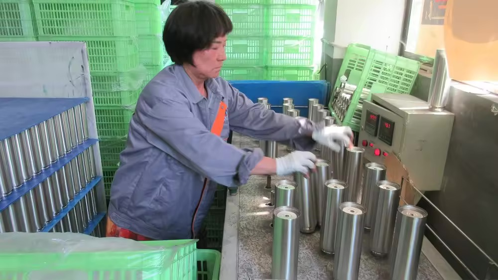

Critical, Major, Minor: A Defect Classification Guide for Drinkware
AQL tells you how many to inspect. Classification tells you what fails. This guide grades drinkware defects the way a QC inspector does — with a real bottle defect table, how grading drives the AQL call, and a defect-handling clause for your purchase order.

Most buyers know they need an AQL sampling plan — how many units to pull and inspect. Far fewer write down what counts as a failure. That gap is where disputes start. Two defective bottles out of 200 means something completely different if one has lost its vacuum and the other has a faint scratch. This guide sets the grading standard first, then shows how it plugs into the sampling plan.
01 Why Grading Matters as Much as Sampling
A sampling plan without a classification standard is blind. It tells you the count of rejects; it does not tell you whether a reject is a safety problem or a cosmetic one. The same "2 defects" can be:
- two critical — the lot is unsafe and must not ship;
- two minor — within commercial tolerance, the lot is fine;
- one of each — reject the unsafe unit and decide on the cosmetic one by the AQL plan.
You cannot make that call until the classes are defined. Define them before production, not during the argument at the port.
02 The Three Severity Levels
| Class | Definition | Typical outcome |
|---|---|---|
| Critical | Unsafe, unfit for use, or in breach of a food-contact or product-safety regulation. | Acceptance number 0 — any found unit rejects or triggers a 100% sort. |
| Major | Usable but clearly below the agreed specification; affects function or your brand. | Controlled by the AQL plan (e.g. AQL 2.5) with a defined accept/reject number. |
| Minor | Cosmetic, within normal commercial tolerance; does not affect function. | Controlled by a looser AQL (e.g. AQL 4.0) or accepted within limits. |
03 A Real Drinkware Defect Table
This is the table to attach to your inspection specification. It is written the way an inspector reads it: a defect, its class, and why.
| Defect | Class | Why it lands there |
|---|---|---|
| Vacuum failure — will not hold temperature | Critical | Product fails its core function; unusable as advertised |
| Leakage at seam or lid | Critical | Spills; unsafe in a bag; breaches the basic promise |
| Foreign matter inside the vessel | Critical | Hygiene and food-safety breach |
| Non-food-grade material in contact with liquid | Critical | Regulatory breach (FDA / LFGB / EU) |
| Sharp edge or burr on rim or lip | Critical | Injury risk |
| Dent on body or base | Major | Visible, affects resale and perceived quality |
| Rust spot on steel surface | Major | Signals material or process fault |
| Wrong colour or print vs approved sample | Major | Brand mismatch, cannot sell as specified |
| Misaligned or crooked logo | Major | Brand defect |
| Lid seal leaks under pressure | Major | Functional but below spec |
| Light surface scratch | Minor | Cosmetic, within tolerance |
| Slight colour deviation vs master | Minor | Cosmetic, within commercial tolerance |
| Small coating bubble | Minor | Cosmetic, not structural |

04 How Classification Drives the AQL Call
The sampling plan (see our AQL 2.5 sampling chart for drinkware) answers: from a lot of N, inspect n, accept up to c. Classification answers: which defects count toward c, and which don't.
- Critical defects are scored separately and usually at acceptance number 0 — they are not pooled into the major/minor count.
- Major defects are scored against the AQL 2.5 accept/reject number for your lot size.
- Minor defects are scored against the looser AQL you agreed (often 4.0).
A lot can have an acceptable major/minor count and still be rejected because one critical defect was found. That is correct behaviour, and it is why the two documents must travel together.

05 Documents to Attach to Your PO
Put all three in the same purchase-order attachment so there is no ambiguity at inspection time:
- The defect classification table above, with your own product-specific additions.
- The AQL sampling plan — lot-size band, sample size, and the accept/reject number per class.
- The inspection method — how vacuum, leakage and coating are tested, and which approved sample is the reference.
06 The Defect-Handling Clause
Copy this and fill the brackets. It turns a dispute into a defined procedure:
Defect handling: Goods are inspected against the agreed defect classification (critical / major / minor) and AQL plan [AQL 0 critical, AQL 2.5 major, AQL 4.0 minor]. Any critical defect found in the inspected sample entitles the buyer to reject the affected lot, require a 100% sort at the supplier's cost, or claim against the order. Major defects are governed by the AQL accept/reject number; where the lot is accepted with major defects, the buyer may negotiate a price adjustment of [agreed %]. Minor defects within the agreed AQL are accepted without adjustment. Claims must be raised within [days] of arrival at the destination port, with photographic evidence and the inspection report.
07 Talk to STWADD About Inspection
Get an inspection specification for your order Free sample
Send us your product and target market and we will return, in writing:
- the defect classification table tailored to your model (critical / major / minor);
- the AQL plan for your lot size, with the accept/reject number per class;
- the test method for vacuum, leakage and coating, and the approved-sample reference.
Sample policy: we send a sample free of charge — you pay only the freight, no deposit. Every batch we ship is inspected against an agreed classification and AQL plan before the container is sealed.
WhatsApp +86 150 8822 8843 · Email bob@stwadd.com
We are a factory-backed supply company in Yongkang, Zhejiang: production runs to your specification at audited partner factories we qualify and work with directly, and every batch passes the inspection plan before the container is sealed. Our OEM and ODM page covers sampling, lead times and inspection, and our AQL 2.5 sampling chart is the companion reference for the sampling side of the same plan.